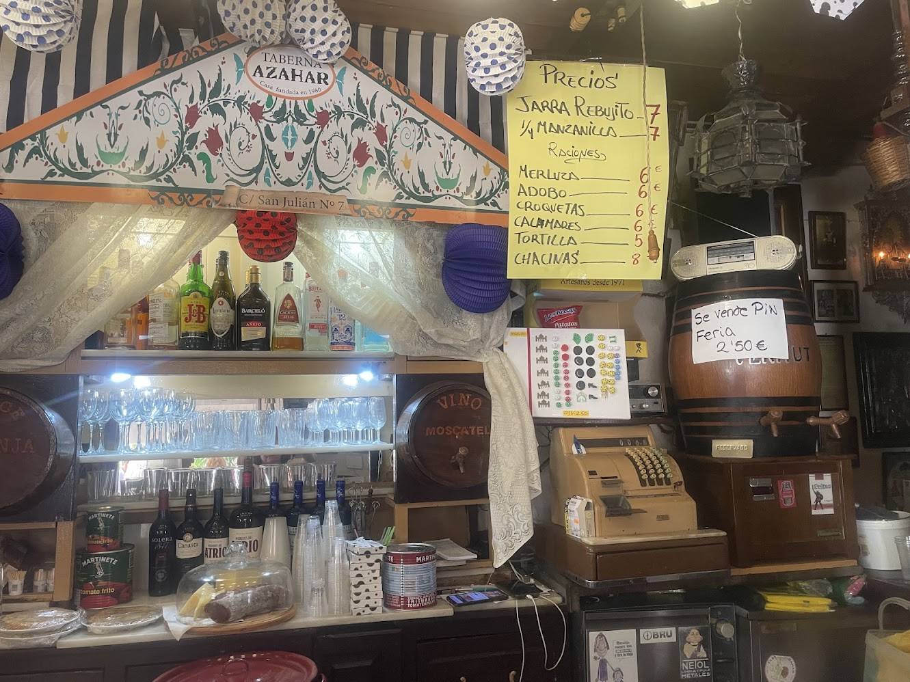
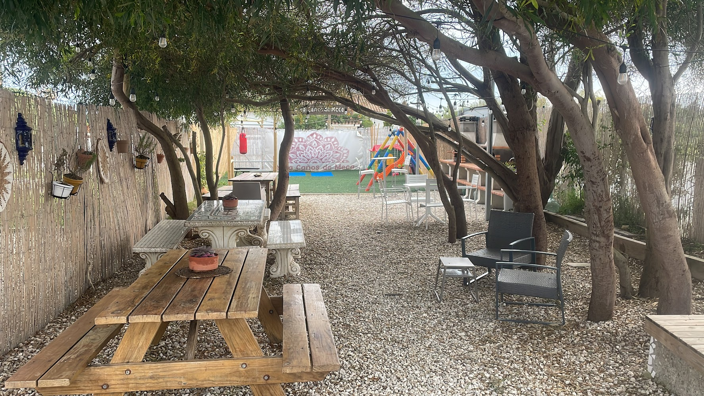

La artesanía como futuro sostenible

Las jornadas de artesanía reúnen a profesionales de distintos ámbitos con el objetivo de preservar técnicas tradicionales.
En un mundo cada vez más industrializado, la artesanía representa una alternativa sostenible y humana.
“La artesanía no es solo técnica, es memoria cultural viva.”
Durante el evento se realizarán talleres, charlas y demostraciones en vivo.
Actividades destacadas
- Taller de cerámica tradicional
- Demostración de forja artesanal
- Charla sobre diseño sostenible
